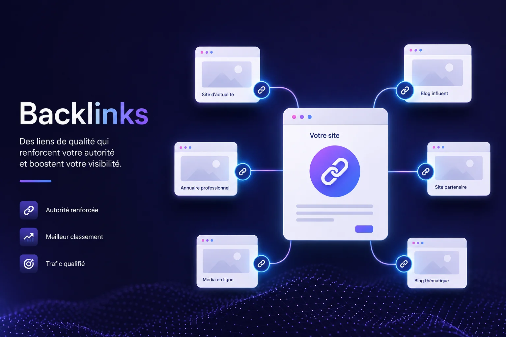

Qu’est-ce qu’un backlink ?
Un backlink, ou lien entrant, renvoie d’un autre site vers une de vos pages. Il peut faire découvrir une ressource à un lecteur et aider les moteurs à la trouver. Un lien isolé ne garantit aucune progression dans les résultats.
Par Central Web Agency · Mis à jour le

Quelles démarches peuvent donner lieu à une mention ?
- Annuaires professionnels. Choisissez les répertoires consultés par vos clients ou les adhérents de votre secteur. Vérifiez que vous pouvez y maintenir des coordonnées exactes.
- Associations et événements. Lors d’une collaboration réelle, l’organisateur peut lier le programme, une fiche participant ou un guide utile.
- Médias et partenaires. Proposez une information adaptée à leur public. Un lien vers une ressource précise se justifie lorsqu’il aide le lecteur à comprendre ou à agir.
Exemple illustratif. Une association de commerçants de l’Isère prépare une page sur un événement. Elle peut renvoyer vers le programme ou les informations d’accès publiées par un participant. Le lien a une destination utile indépendamment de son effet sur le classement.
Quelles pratiques éviter ?
Les règles
de Google sur le spam de liens citent notamment l’achat de liens destinés à influencer le
classement, les échanges excessifs et les annuaires de faible qualité. Une mention rémunérée
peut être signalée avec rel="sponsored" ou nofollow.
Choisissez vos démarches en fonction du public, du sujet et de l’utilité de la destination. Dans la région lyonnaise, une page d’association professionnelle ou de presse locale peut être pertinente lorsque la mention répond à un besoin de ses lecteurs. Pour replacer ces liens parmi les autres leviers, consultez notre guide du référencement local.